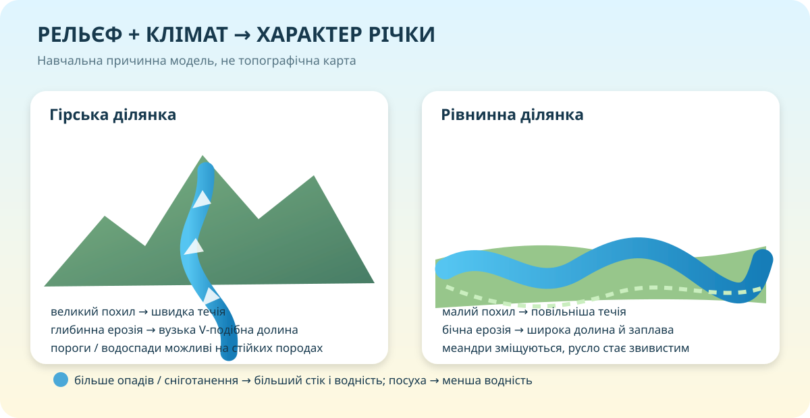

Дві річки. Яка з них «читає» крутіший рельєф?


Порівняйте не «красиво / некрасиво», а параметри
| Ознака | Гірська річка | Рівнинна річка | Що це доводить? |
|---|---|---|---|
| Похил русла | великий | малий | визначає компонент сили тяжіння вздовж русла |
| Швидкість | зазвичай вища | зазвичай нижча | впливає на ерозію й перенесення уламків |
| Долина | вузька, глибока | широка, із заплавою | глибинна ↔ бічна ерозія |
| Русло | пороги, валуни, менше великих меандрів | звивисте, меандри, стариці | різний баланс ерозії й акумуляції |
Держводагентство веде геопортал і відкритий кадастр поверхневих вод. Використовуйте їх як джерело реальних водних об’єктів, а не декоративну «карту з інтернету».
Похил річки: одна цифра, яка багато пояснює
Похил = падіння річки / довжина ділянки. Якщо висота зменшилася на 180 м за 12 км, похил становить 15 м/км. Якщо на 12 м за 60 км — лише 0,2 м/км.
15,0 м/км
Такий похил типовий для досить енергійної гірської ділянки: очікуйте швидшу течію та активнішу глибинну ерозію.
Русло — лише «шов» усередині значно більшої форми

Найнижча частина долини, якою вода тече постійно або більшу частину року.
Низька частина долини, яка може затоплюватися під час високої води.
Сходинкоподібні рівні — сліди колишнього положення дна чи заплави.
Обмежують долину й відображають врізання річки у рельєф.
Крутість дає енергію, клімат — воду
🌧️ Опади
Більше ефективних опадів → за інших рівних умов більший стік.
❄️ Сніг
Накопичення й швидке танення можуть спричиняти виразне весняне водопілля.
☀️ Випаровування
Висока температура й сухість зменшують частку води, що потрапить у річковий стік.
Модель сценарію
—
Тепер збираємо закономірність
1. Рельєф
Задає напрям стоку та похил. Великий похил підсилює швидкість і глибинну ерозію; малий сприяє бічній ерозії, меандруванню й ширшим заплавам.
2. Клімат
Визначає надходження й сезонність води через опади, сніготанення, випаровування та опосередковано — ґрунтове живлення.
3. Геологічна будова
Стійкість і тріщинуватість порід впливають на врізання долини, пороги, проникнення води та локальні форми русла.
Перевірте модель на ще одному поясненні
Дивимось не пасивно
Запишіть по одному твердженню з відео, яке:
10 балів: не пам’ять, а причинні зв’язки
Один сильний висновок замість п’яти слабких
Міні-досьє реальної річкової ділянки
Оберіть одну річку України. За картою/геопорталом і фото визначте: тип ділянки, орієнтовний характер похилу, форму долини, ознаки живлення/режиму. Додайте 2 докази й короткий CER-висновок.
Електронний підручник ІМЗО ↗Геопортал водних ресурсів ↗Базовий — 1 річка, 2 докази.
Достатній — додайте обчислення похилу для знайденої ділянки, якщо є висоти й відстань.
Високий — порівняйте дві контрастні ділянки та поясніть різницю через рельєф + клімат + породи.